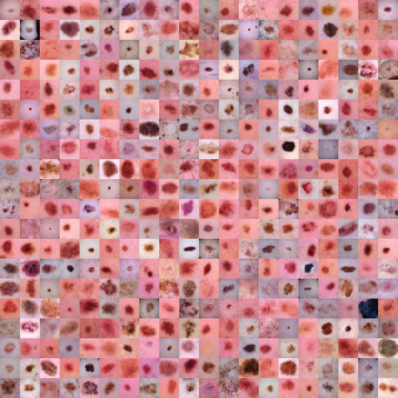
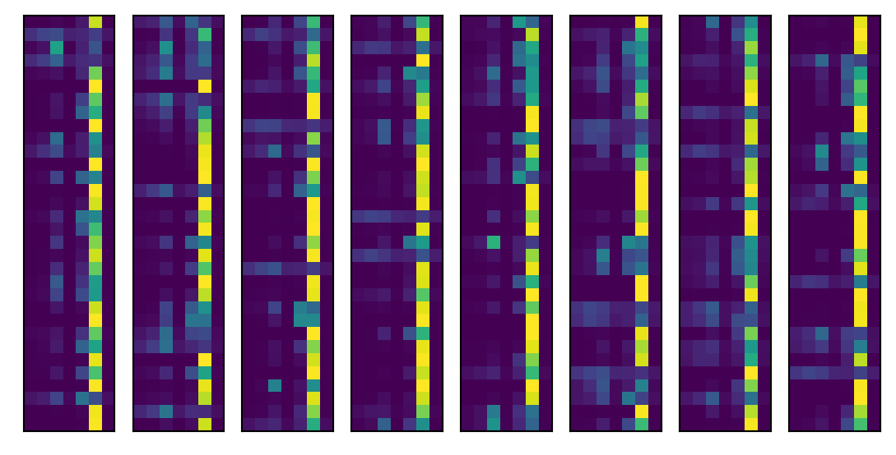
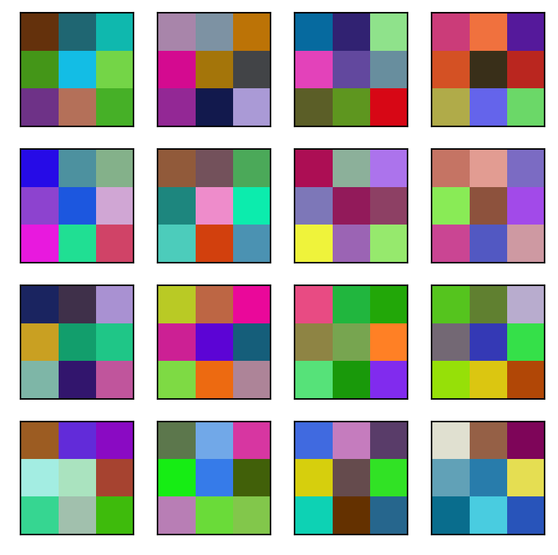
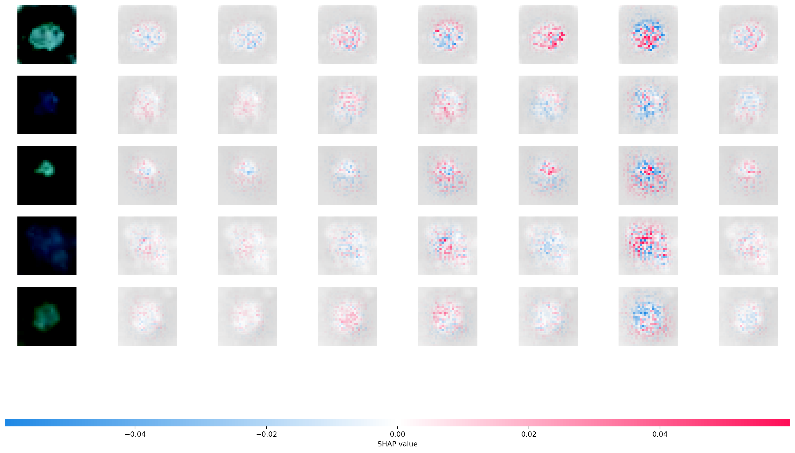

from tqdm import tqdm
import numpy as np
import torch
import torch.nn as nn
import torch.optim as optim
import torch.utils.data as data
import torchvision
import torchvision.transforms as transforms
import medmnist
from medmnist import INFO, Evaluator
import matplotlib.pyplot as plt
import scipy10 Example convnet
10.1 Medical MNIST data
Medical images offer unique challenges for imaging. A common format for medical images is dicom. Most medical images are 3D or 4D grayscale images. To get a sense of working with medical images, let’s consider a set of 2D color images from the medical mnist library (Yang et al. 2021). A tutorial for working with these images can be found here. These are images of moles to determine whether or not they are cancerous. We’ll follow along with the medmnist code then investigate the output.
Here are the imports
The dermamnist code downloads the data and loads it into a pytorch dataloader. It also keeps track of outcomes.
## Using the code from https://github.com/MedMNIST/MedMNIST/blob/main/examples/getting_started.ipynb
data_flag = 'dermamnist'
## This defines our NN parameters
NUM_EPOCHS = 10
BATCH_SIZE = 128
lr = 0.001
info = INFO[data_flag]
task = info['task']
n_channels = info['n_channels']
n_classes = len(info['label'])
data_transform = transforms.Compose([
transforms.ToTensor(),
transforms.Normalize(mean=[.5], std=[.5])
])
DataClass = getattr(medmnist, info['python_class'])
# load the data
train_dataset = DataClass(split = 'train', transform = data_transform, download = True)
test_dataset = DataClass(split = 'test' , transform = data_transform, download = True)
pil_dataset = DataClass(split = 'train', download = True)
train_loader = data.DataLoader(dataset=train_dataset, batch_size=BATCH_SIZE, shuffle=True)
train_loader_at_eval = data.DataLoader(dataset=train_dataset, batch_size= 2 * BATCH_SIZE, shuffle=False)
test_loader = data.DataLoader(dataset=test_dataset, batch_size=2*BATCH_SIZE, shuffle=False)Using downloaded and verified file: /home/bcaffo/.medmnist/dermamnist.npz
Using downloaded and verified file: /home/bcaffo/.medmnist/dermamnist.npz
Using downloaded and verified file: /home/bcaffo/.medmnist/dermamnist.npzLet’s look at a montage of images. Here is the Mayo clinic’s page for investigating moles for potential cancer. To quote them, use the ABCDE method, which they define exactly as below
- A is for asymmetrical shape. Look for moles with irregular shapes, such as two very different-looking halves.
- B is for irregular border. Look for moles with irregular, notched or scalloped borders — characteristics of melanomas.
- C is for changes in color. Look for growths that have many colors or an uneven distribution of color.
- D is for diameter. Look for new growth in a mole larger than 1/4 inch (about 6 millimeters).
- E is for evolving. Look for changes over time, such as a mole that grows in size or that changes color or shape. Moles may also evolve to develop new signs and symptoms, such as new itchiness or bleeding.
Our data is cross sectional. So parts of C and D and all of E are challenging. We do not have patient retrospective reports.
train_dataset.montage(length=20)/home/bcaffo/miniconda3/envs/ds4bio/lib/python3.10/site-packages/medmnist/utils.py:25: FutureWarning:
`multichannel` is a deprecated argument name for `montage`. It will be removed in version 1.0. Please use `channel_axis` instead.

Here are the labels
info['label']{'0': 'actinic keratoses and intraepithelial carcinoma',
'1': 'basal cell carcinoma',
'2': 'benign keratosis-like lesions',
'3': 'dermatofibroma',
'4': 'melanoma',
'5': 'melanocytic nevi',
'6': 'vascular lesions'}Here’s a frequency table of the outcomes in the training data. Notice the prevalence of the sixth category (numbered 5), melanocytic nevi. Looking over our data, it’s by far the most prevalent. See below where we see that the this category is 67% of our training data.
train_targets = []
for i, t in train_loader:
train_targets = np.append(train_targets, t.numpy())
import pandas as pd
pd.DataFrame({'target' : train_targets }).value_counts(normalize = True)target
5.0 0.669759
4.0 0.111175
2.0 0.109747
1.0 0.051234
0.0 0.032539
6.0 0.014129
3.0 0.011417
dtype: float64This is important to note, because 67% trianing data accuracy is obtainable by simply calling every tumor melanocytic nevi.
Note that the categories are exclusionary. That is, if a mole is of type \(j\), it can’t be of type \(j'\). This is different than a task where we’re trying to model multiple properties of the mole. For example, imagine if our dermatologist recorded whether a mole satisfied each of the A, B, C or D criteria. Then, the picture could have multiple 1s across different outcomes. Instead, we only have one possible outcome of the 7 for each.
So, we use a softmax outcome. If \(\eta_j\) is a final layer of our network corresponding to category \(j\), consider defining \[ P(Y_i = j) = \frac{\exp(\eta_j)}{\sum_{j'=1}^J \exp(\eta_{j'})} \] where \(J\) is the number of categories (7 in our case) and \(Y_i\) is an outcome for image \(i\). Notice, this sums to 1 over \(j\).
10.2 Training the network
Here is the medmnist NN. Note convd has argument in_channels, out_channels, kernel_size. So, in this case the number of channels in is 3 and in the first layer it puts out a 16 channel image obtained by convolving a 3x3x3 kernels with each channel, adding bias terms, then repeating that 15 more times (documentaiton).
class Net(nn.Module):
def __init__(self, in_channels, num_classes):
super(Net, self).__init__()
self.layer1 = nn.Sequential(
nn.Conv2d(in_channels, 16, kernel_size=3),
nn.BatchNorm2d(16),
nn.ReLU())
self.layer2 = nn.Sequential(
nn.Conv2d(16, 16, kernel_size=3),
nn.BatchNorm2d(16),
nn.ReLU(),
nn.MaxPool2d(kernel_size=2, stride=2))
self.layer3 = nn.Sequential(
nn.Conv2d(16, 64, kernel_size=3),
nn.BatchNorm2d(64),
nn.ReLU())
self.layer4 = nn.Sequential(
nn.Conv2d(64, 64, kernel_size=3),
nn.BatchNorm2d(64),
nn.ReLU())
self.layer5 = nn.Sequential(
nn.Conv2d(64, 64, kernel_size=3, padding=1),
nn.BatchNorm2d(64),
nn.ReLU(),
nn.MaxPool2d(kernel_size=2, stride=2))
self.fc = nn.Sequential(
nn.Linear(64 * 4 * 4, 128),
nn.ReLU(),
nn.Linear(128, 128),
nn.ReLU(),
nn.Linear(128, num_classes))
def forward(self, x):
x = self.layer1(x)
x = self.layer2(x)
x = self.layer3(x)
x = self.layer4(x)
x = self.layer5(x)
x = x.view(x.size(0), -1)
x = self.fc(x)
return x
model = Net(in_channels=n_channels, num_classes=n_classes)
criterion = nn.CrossEntropyLoss()
optimizer = optim.SGD(model.parameters(), lr=lr, momentum=0.9)Now we can train the network. Just for the sake of time, we’ve set the number of epochs to be fairly low.
for epoch in range(NUM_EPOCHS):
train_correct = 0
train_total = 0
test_correct = 0
test_total = 0
model.train()
for inputs, targets in train_loader:
# forward + backward + optimize
optimizer.zero_grad()
outputs = model(inputs)
if task == 'multi-label, binary-class':
targets = targets.to(torch.float32)
loss = criterion(outputs, targets)
else:
targets = targets.squeeze().long()
loss = criterion(outputs, targets)
loss.backward()
optimizer.step()10.3 Evaluating the network
There’s some evaluation methods included at the MedMnist repo. Below this calculates the AUCs and the accuracy.
def test(split):
model.eval()
y_true = torch.tensor([])
y_score = torch.tensor([])
data_loader = train_loader_at_eval if split == 'train' else test_loader
with torch.no_grad():
for inputs, targets in data_loader:
outputs = model(inputs)
outputs = outputs.softmax(dim=-1)
if task == 'multi-label, binary-class':
targets = targets.to(torch.float32)
else:
targets = targets.squeeze().long()
targets = targets.float().resize_(len(targets), 1)
y_true = torch.cat((y_true, targets), 0)
y_score = torch.cat((y_score, outputs), 0)
y_true = y_true.numpy()
y_score = y_score.detach().numpy()
evaluator = Evaluator(data_flag, split)
metrics = evaluator.evaluate(y_score)
print('%s auc: %.3f acc:%.3f' % (split, *metrics))
print('==> Evaluating ...')
test('train')
test('test')==> Evaluating ...train auc: 0.887 acc:0.725test auc: 0.879 acc:0.712Let’s look into the levels. First let’s grab a batch and run it through the model. Then we’ll look at the predictions for a batch. Recall there are 7 tumor types, so we plot our predictions as an image (in little bars since it’s too long otherwise).
inputs, targets = iter(test_loader).next()
outputs = model(inputs)
outputs = outputs.softmax(dim=-1)
I, J = outputs.shape
for i in range(8):
plt.subplot(1,8,i+1)
plt.xticks([])
plt.yticks([])
plt.imshow(outputs.detach().numpy()[int(i * I / 8 ) : int((i + 1) * I / 8), :]);
As expected, it’s predicting the sixth category, labeled 5 since we’re counting from 0, very often, since it is the most prevalent category. The roughly 90% accuracy is pretty good. But, recall, we get 67% accuracy for free. Here’s the highest predictory category for 16 randomly selected images from our batch, their highest probability category and what their actual category is.
batch = outputs.detach().numpy()
#grab 16 images to plot
indices = np.random.permutation(np.array(range(I)))[0 : 16]
## The associated
actual = targets.squeeze(-1).numpy()[indices]
target_pred = batch.argmax(axis = 1)[indices]
target_prob = np.round(batch.max(axis = 1) * 100)[indices]
images = inputs.numpy()[indices,:,:,:]
plt.figure(figsize=(10,10))
for i in range(16):
plt.subplot(4,4,i+1)
plt.xticks([])
plt.yticks([])
img = np.transpose(images[i,:,:,:], (1, 2, 0));
img = ((img + 1)* 255/2).astype(np.uint8)
plt.title("P="+str(target_prob[i])+",Yhat="+str(target_pred[i])+",Y="+ str(actual[i]))
plt.imshow(img);Let’s look at a cross tabulation of the model prediction versus the actual value.
targets_pred, targets_actual = [], []
for i,t in test_loader:
targets_pred.append(model(i).softmax(dim=-1))
targets_actual.append(t)
targets_pred = torch.cat(targets_pred, dim = 0).detach().numpy().argmax(axis = 1)
targets_actual = torch.cat(targets_actual, dim=0).numpy().squeeze()
## This is the confusion matrix data
confusion = pd.DataFrame({'y' : targets_actual, 'yhat' : targets_pred}).value_counts()
confusion.head(10)y yhat
5 5 1245
4 5 116
2 2 95
5 87
4 4 69
1 5 57
5 4 52
2 40
4 2 34
0 5 25
dtype: int6410.4 Visualizing the network
Here are the convolutions. Note they are color images since there are 3 channels.
### here's a list of the states that the model has kept track of
state_dictionary = list(model.state_dict())
state_dictionary[1 : 5]
### let's get the first round of weights
layer1_kernel = model.get_parameter('layer1.0.weight').detach().numpy()
layer1_kernel = layer1_kernel - layer1_kernel.min()
layer1_kernel = layer1_kernel / layer1_kernel.max()
layer1_kernel = layer1_kernel * 255
plt.figure(figsize=(5,5))
for h in range(16):
plt.subplot(4,4,h+1)
plt.xticks([])
plt.yticks([])
img = np.transpose(layer1_kernel[h,:,:,:],(1,2,0)).astype(np.uint8);
plt.imshow(img);
Look at the convolutional layers by following the first image (upper left) through the network.
l1 = model.layer1(inputs)
## plot one
images = l1.detach().numpy()[indices,:,:,:]
i = 0
plt.figure(figsize=(10,10))
for h in range(16):
plt.subplot(4,4,h+1)
plt.xticks([])
plt.yticks([])
img = images[i,h,:,:];
plt.imshow(img);
Let’s use SHAP to look at our convolutional neural network. SHAP uses Shapley values from game theory to explain NN predictors. Here’s a manuscript that utilizes SHAP values on this problem.
The Shapley value is defined in game theory as the contribution of a player to a teams’ output factoring in their cooperation. In neural networks, a pixel could be a considered a player and the gain function as the output. The goal is to see the contribution of the player/pixel, factoring in the contributions and how they interact with the others. The Shapley values are difficult to compute, and so approximations need to be used. Python has a package shap that can be used to calculate and visualize approximated Shapley values for an input.
The following code is taken from here
import shap
from PIL import Image
batch = next(iter(test_loader))
images, _ = batch
background = images[:100]
test_images = images[100:105]
e = shap.DeepExplainer(model, background)
shap_values = e.shap_values(test_images)
shap_numpy = [np.swapaxes(np.swapaxes(s, 1, -1), 1, 2) for s in shap_values]
test_numpy = np.swapaxes(np.swapaxes(test_images.cpu().numpy(), 1, -1), 1, 2)
shap.image_plot(shap_numpy, -test_numpy)Using a non-full backward hook when the forward contains multiple autograd Nodes is deprecated and will be removed in future versions. This hook will be missing some grad_input. Please use register_full_backward_hook to get the documented behavior.Clipping input data to the valid range for imshow with RGB data ([0..1] for floats or [0..255] for integers).Clipping input data to the valid range for imshow with RGB data ([0..1] for floats or [0..255] for integers).Clipping input data to the valid range for imshow with RGB data ([0..1] for floats or [0..255] for integers).Clipping input data to the valid range for imshow with RGB data ([0..1] for floats or [0..255] for integers).Clipping input data to the valid range for imshow with RGB data ([0..1] for floats or [0..255] for integers).